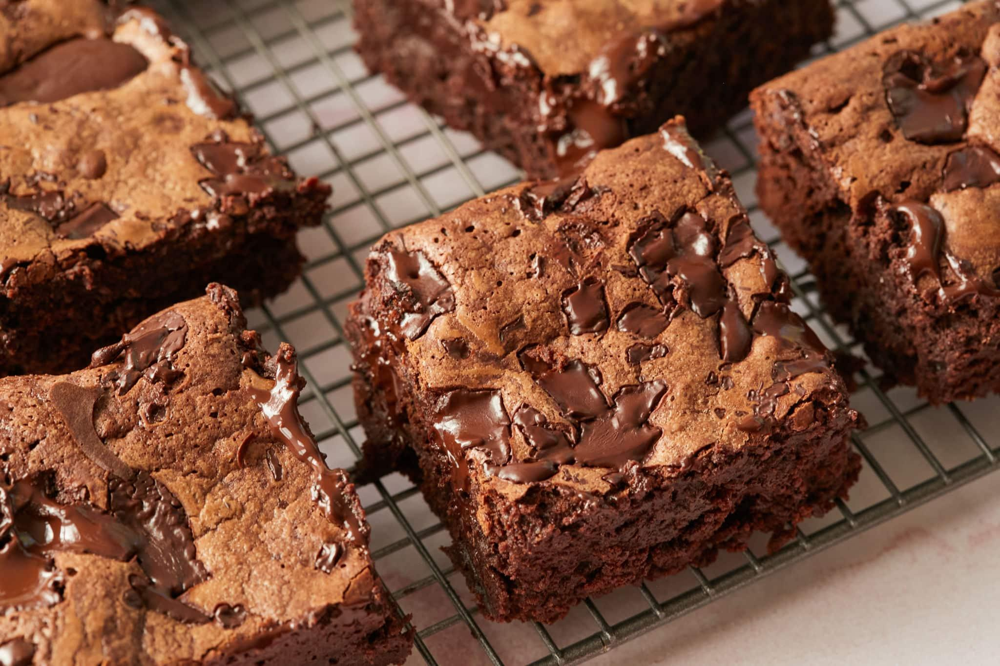

Brownie
Welcome to Brownie recipe.

See the ingredients below, follow the instructions and enjoy these awesome brownies!
Prep time: 40 minutes
Serving: 9 brownies
Ingredients
- 200g dark chocolate
- 100g butter
- 3 eggs
- 1 cup sugar
- 1/2 cup all-purpose flour
- 1/4 cocoa powder
- A pinch of salt
- 1 teaspoon vanilla extract
Instructions
- Preheat the oven to 350°F.
- Melt the dark chocolate and butter together using a double boiler or microwave.
- In a large bowl, whisk together the eggs and sugar until combined.
- Add the melted chocolate mixture and stir well.
- Mix in the vanilla extract.
- Sift the flour, cocoa powder and salt into the mixture.
- Gently fold everything together until you have a smooth batter.
- Pour the batter into a greased or parchment-lined baking pan.
- Bake for approximately 25 minutes.
- Remove from oven while the center is still slightly fudgy.
- Allow the brownies to cool before cutting them into squares.
Homepage